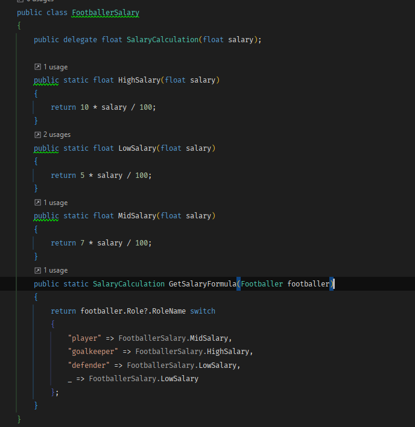
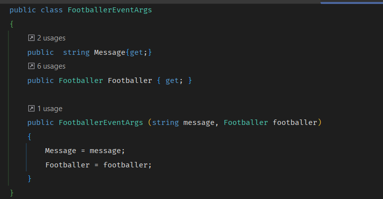
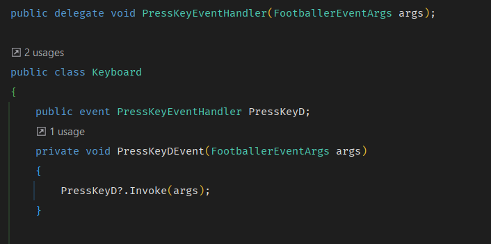
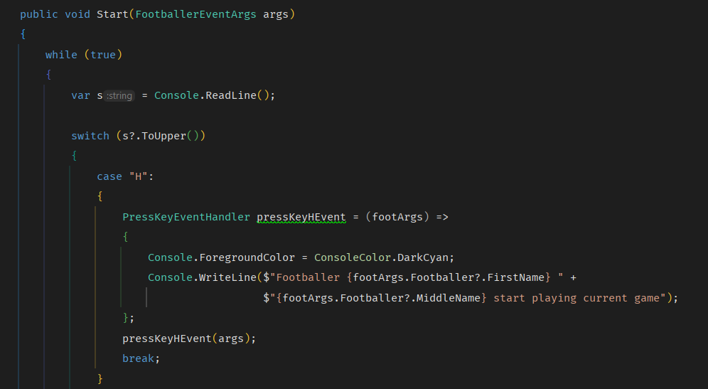
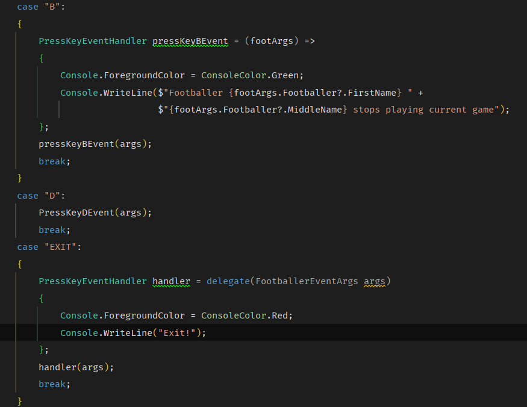
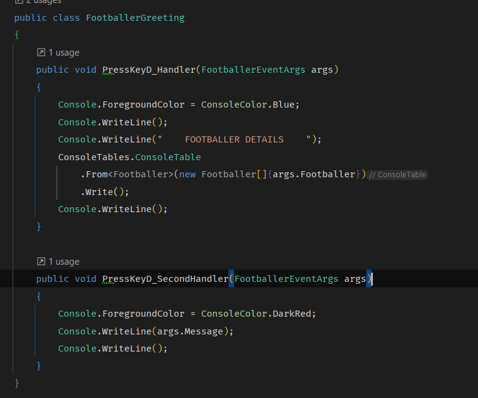
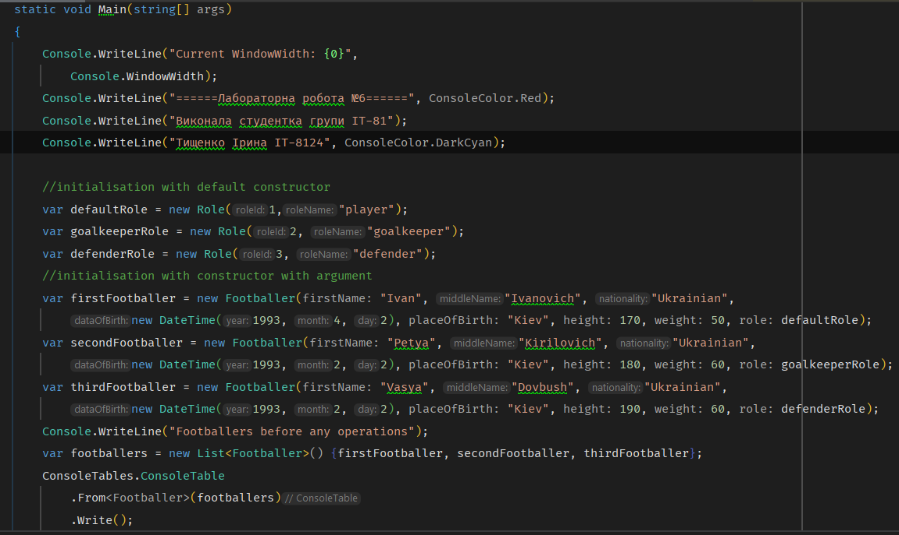
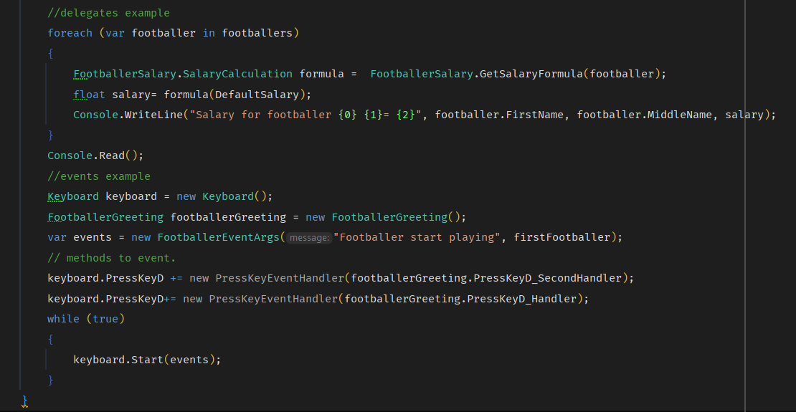
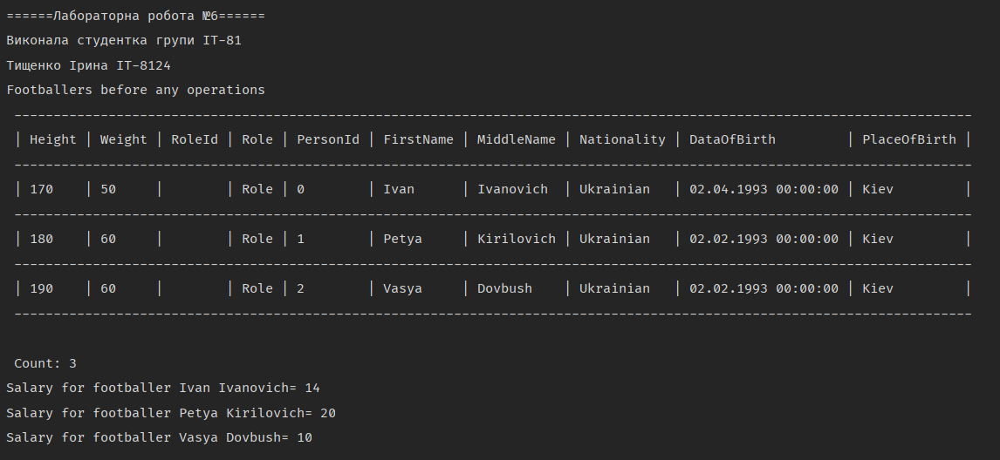
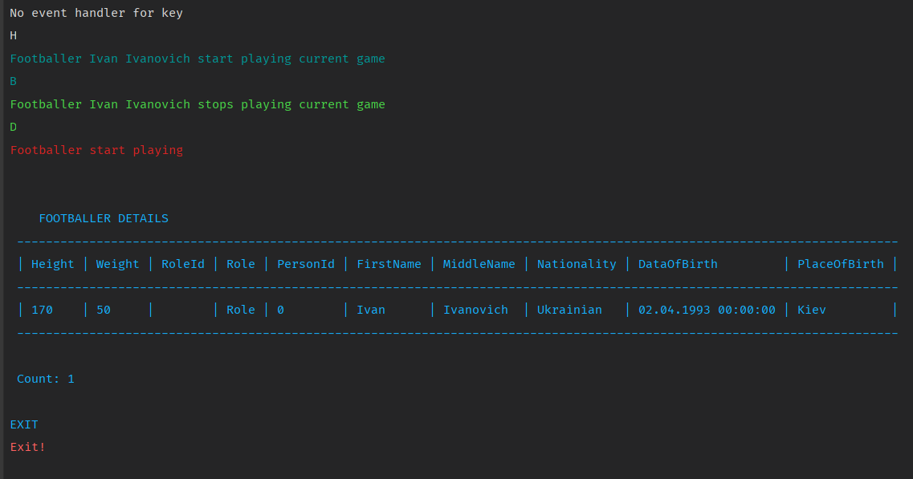

Тема: ДЕЛЕГАТИ. ПОДІЇ. АНОНІМНІ МЕТОДИ. ЛЯМБДА-ОПЕРАТОРИ. ЛЯМБДА-ВИРАЗИ
Мета : придбати практичні навички роботи створення та використання делегатів, анонімних методи, лямбда-операторів, лямбда-виразів. Постановка задачі:-
До програмного коду попередн іх лабораторних робіт добавити та
описати:
- класи-делегати (мінімум три делегата);
- події;
- анонімні методи;
- лямбди –оператори;
- лямбди –вирази;
- Протестувати програму. Зробити висновки
Місце розташування проекту.
Середовище розробки : Rider
Клас для логіки делегата
Аргументи подій
   Обробка подій
Вивід програми
Футболісти
 Делегати
Події
Делегат – це об‘єкт, який може посилатися на метод. Фактично, делегат інкапсулює метод.
Після створення делегату, отримується об‘єкт, що містить посилання на метод.
Завдяки делегату можна викликати метод, на який цей делегат посилається.
Подія - це автоматичне повідомлення про те, що в програмі відбулося кілька дій.
Після виконання тієї чи іншої події програма може відповідно реагувати.
Реакція на події здійснюється за допомогою так званих обробників подій.
Обработник подій - це звичайний метод, який виконує деякі дії в програмі, у випадку, якщо це було згенерировано подією.
Події працюють в об'єднанні з делегатами.